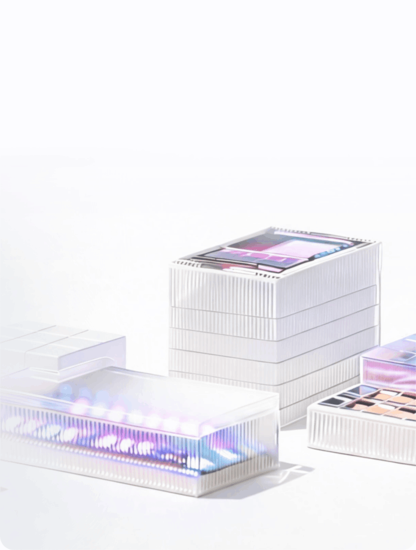
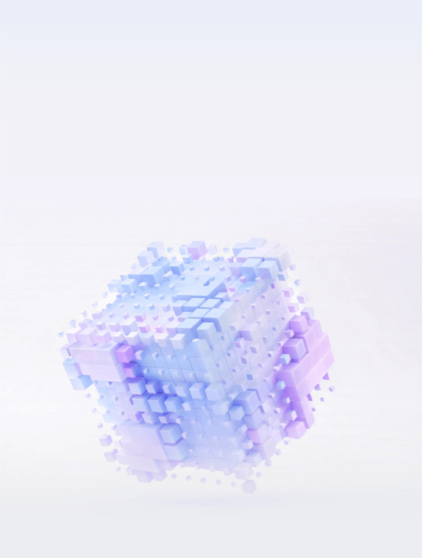
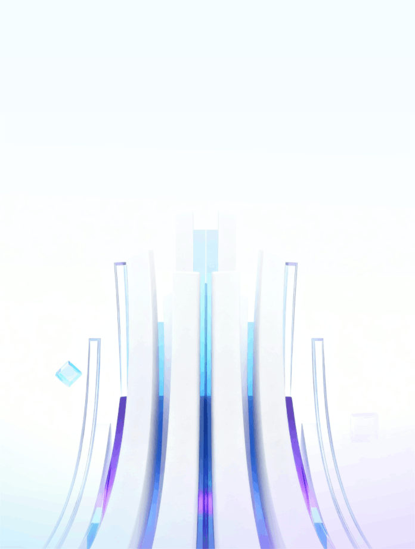
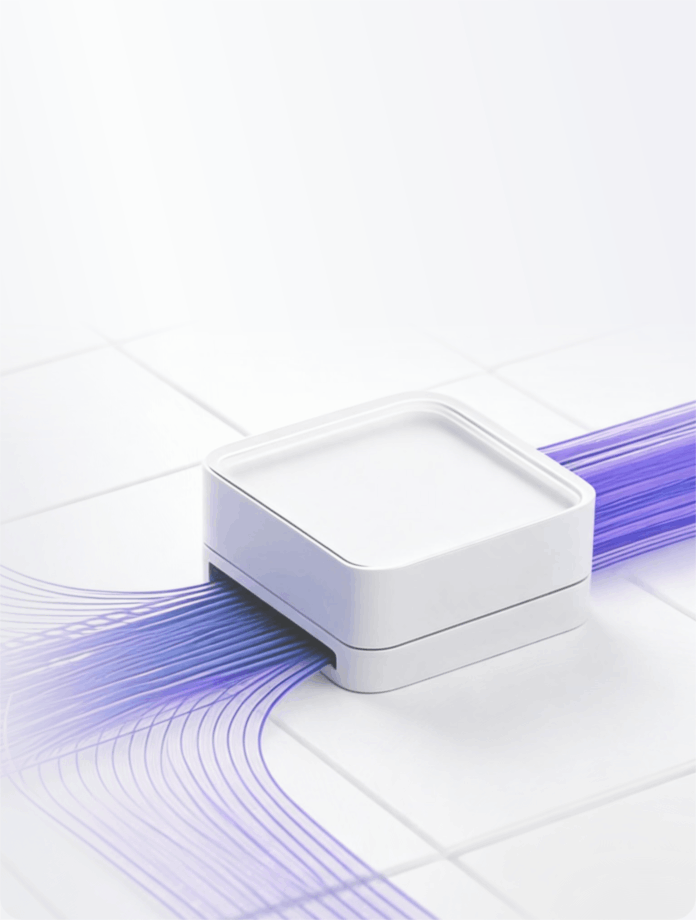
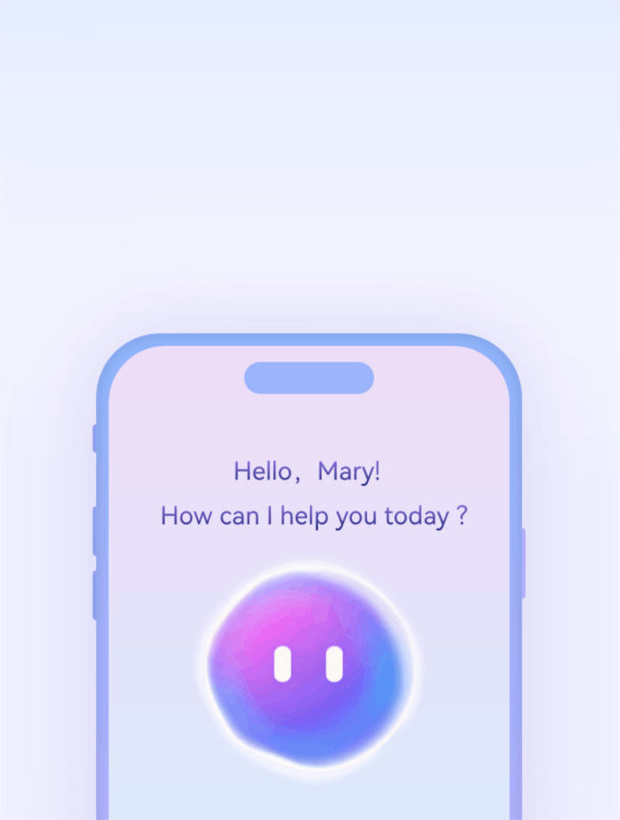
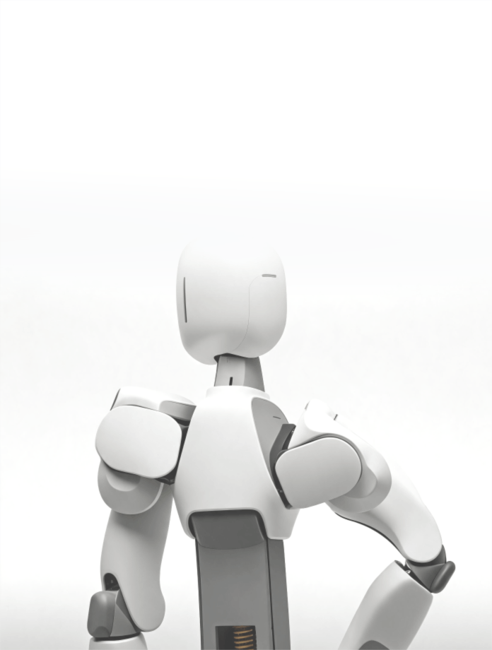
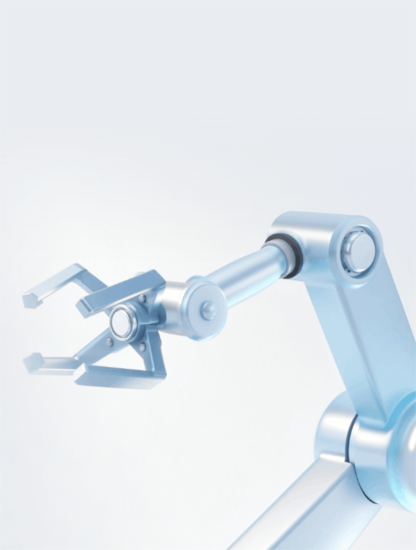
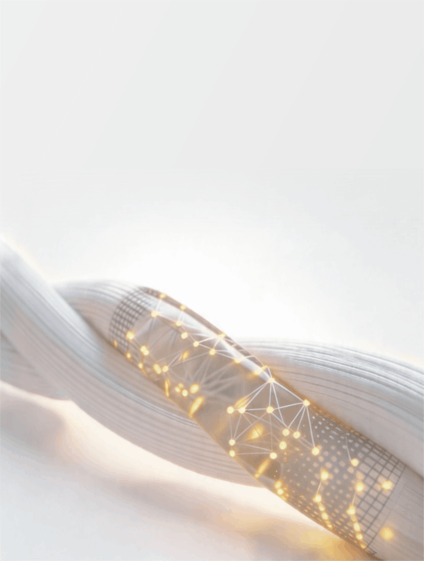
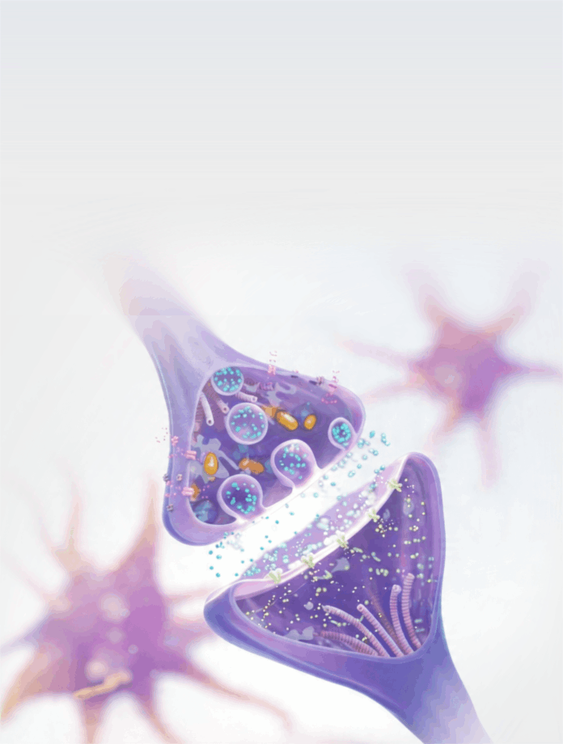
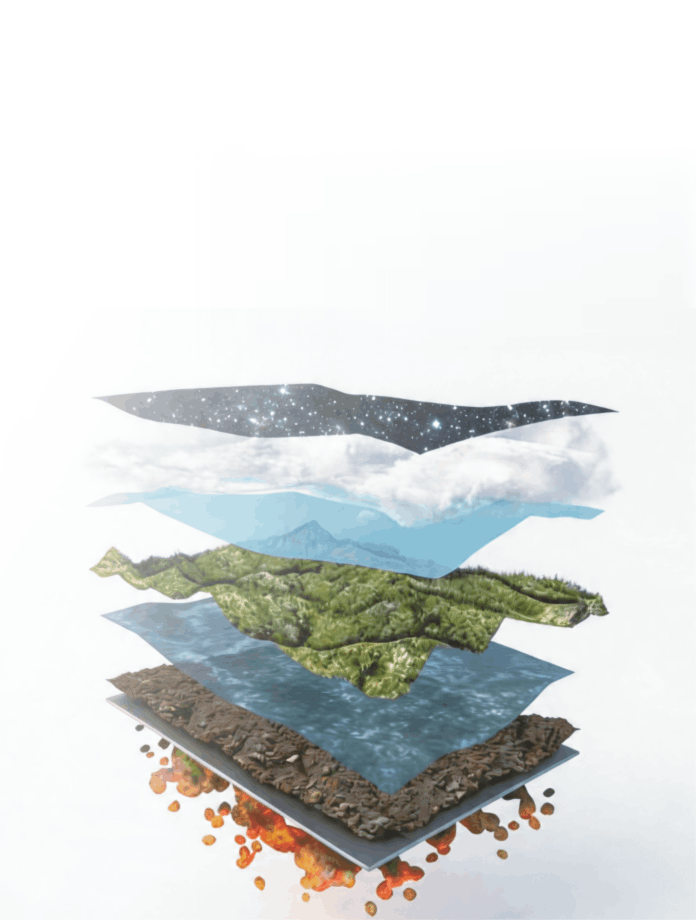

关键正文不默认隐藏
概述
Tab、折叠、悬停提示和弹窗等交互形式可以优化页面布局与浏览体验，但关键正文可能因默认隐藏、依赖交互或动态加载而难以被 AI Agent 获取。
交互不藏关键正文原则旨在确保页面中的关键知识、定义、操作步骤和命令等内容能够被 AI Agent 直接读取，避免因默认隐藏、依赖交互或动态加载造成信息遗漏。
具体原则
- 关键正文应可直接读取。核心定义、操作步骤、技术参数和命令等内容应存在于可访问的 HTML 中，不应仅在交互触发后才生成或加载。
- 交互组件应保留完整内容。Tab、折叠面板等组件应确保各选项或面板中的正文可被获取，不应只暴露当前选中或展开的内容。
- 关键语义不应依赖悬停或隐藏提示。定义、限制条件等重要信息应有可直接读取的文本；悬停提示可用于补充说明，不应成为唯一的信息来源。
- 交互内容应与页面正文保持一致。切换、展开或加载内容时，应确保文本完整、语义清晰，并避免重复、遗漏或过期信息。
典型示例
Tab 内容可获取
Tab 可以控制内容的展示，但不应导致未选中面板中的关键正文无法获取。各面板应保留完整标题、正文和相关链接。
示例 1 · 科研成果 Tab 查看示例来源
了解与鲲鹏昇腾合作的科研成果
计算机体系结构
从芯片到集群的全栈体系结构创新，构筑高效算力底座。

模型/算法
面向鲲鹏昇腾的模型创新与算法研究，探索AI计算新边界。

训推加速
全流程训推加速/优化技术，让AI模型训练推理更高效。

算子/加速库
底层算子与加速库深度优化，释放硬件极致性能。

通用智能体
具备自主感知、规划与决策能力的通用智能实体，拓展AI应用边界。

推荐/检索技术
智能推荐与向量检索技术，实现精准高效的信息匹配。
生成式AI
文本、图像、语音、代码生成，赋能内容创作与人机交互创新。
具身智能
智能体与物理环境交互的感知决策技术，赋能机器人及自主系统。

工业智能
工业仿真、智能运维与优化决策，加速工业数字化升级。

物质科学
物质模拟与材料设计，探索材料与分子的微观奥秘。

生命科学
生命系统与健康技术研究，助力基因、蛋白与药物等方向的探索。

地球科学
地球系统模拟与预测，探索大气、海洋、地质的演化规律。

- 正确做法：
- 1. 各 Tab 面板正文均可获取，不仅限于当前选中项
- 2. 标题、摘要与链接随面板一并保留
Markdown 书写
- 1. 总题与各条目标题写成带 URL 的链接
- 2. 三个 Tab 的标题与说明都要写出，不要只写当前面板
## 计算系统平台
- 计算机体系结构
- 模型/算法
- 训推加速
- 算子/加速库
# [了解与鲲鹏昇腾合作的科研成果](https://edu.hicomputing.huawei.com/researchers)## 计算系统平台
- [计算机体系结构](https://edu.hicomputing.huawei.com/researchers)：从芯片到集群的全栈体系结构创新，构筑高效算力底座。
- [模型/算法](https://edu.hicomputing.huawei.com/researchers)：面向鲲鹏昇腾的模型创新与算法研究，探索AI计算新边界。
- [训推加速](https://edu.hicomputing.huawei.com/researchers)：全流程训推加速/优化技术，让AI模型训练推理更高效。
- [算子/加速库](https://edu.hicomputing.huawei.com/researchers)：底层算子与加速库深度优化，释放硬件极致性能。## 通用应用技术
- [通用智能体](https://edu.hicomputing.huawei.com/researchers)：具备自主感知、规划与决策能力的通用智能实体，拓展AI应用边界。
- [推荐/检索技术](https://edu.hicomputing.huawei.com/researchers)：智能推荐与向量检索技术，实现精准高效的信息匹配。
- [生成式AI](https://edu.hicomputing.huawei.com/researchers)：文本、图像、语音、代码生成，赋能内容创作与人机交互创新。
- [具身智能](https://edu.hicomputing.huawei.com/researchers)：智能体与物理环境交互的感知决策技术，赋能机器人及自主系统。## 科学/行业应用
- [工业智能](https://edu.hicomputing.huawei.com/researchers)：工业仿真、智能运维与优化决策，加速工业数字化升级。
- [物质科学](https://edu.hicomputing.huawei.com/researchers)：物质模拟与材料设计，探索材料与分子的微观奥秘。
- [生命科学](https://edu.hicomputing.huawei.com/researchers)：生命系统与健康技术研究，助力基因、蛋白与药物等方向的探索。
- [地球科学](https://edu.hicomputing.huawei.com/researchers)：地球系统模拟与预测，探索大气、海洋、地质的演化规律。前端源码调整
- 1. 全部面板正文保留在可访问结构中，标题写成
a href - 2. 激活态只改样式，不删节点、不丢链接
<div class="tab-panel" data-active="true">
<h3>计算机体系结构</h3>
<p>从芯片到集群的全栈体系结构创新…</p>
</div>
<div class="tab-panel hidden">通用应用技术</div>
<h1><a href="https://edu.hicomputing.huawei.com/researchers">了解与鲲鹏昇腾合作的科研成果</a></h1><section class="tab-panel" data-active="true">
<h2>计算系统平台</h2>
<h3><a href="https://edu.hicomputing.huawei.com/researchers">计算机体系结构</a></h3>
<p>从芯片到集群的全栈体系结构创新，构筑高效算力底座。</p>
<h3><a href="https://edu.hicomputing.huawei.com/researchers">模型/算法</a></h3>
<p>面向鲲鹏昇腾的模型创新与算法研究，探索AI计算新边界。</p>
<h3><a href="https://edu.hicomputing.huawei.com/researchers">训推加速</a></h3>
<p>全流程训推加速/优化技术，让AI模型训练推理更高效。</p>
<h3><a href="https://edu.hicomputing.huawei.com/researchers">算子/加速库</a></h3>
<p>底层算子与加速库深度优化，释放硬件极致性能。</p>
</section><section class="tab-panel">
<h2>通用应用技术</h2>
<h3><a href="https://edu.hicomputing.huawei.com/researchers">通用智能体</a></h3>
<p>具备自主感知、规划与决策能力的通用智能实体，拓展AI应用边界。</p>
<h3><a href="https://edu.hicomputing.huawei.com/researchers">推荐/检索技术</a></h3>
<p>智能推荐与向量检索技术，实现精准高效的信息匹配。</p>
<h3><a href="https://edu.hicomputing.huawei.com/researchers">生成式AI</a></h3>
<p>文本、图像、语音、代码生成，赋能内容创作与人机交互创新。</p>
<h3><a href="https://edu.hicomputing.huawei.com/researchers">具身智能</a></h3>
<p>智能体与物理环境交互的感知决策技术，赋能机器人及自主系统。</p>
</section><section class="tab-panel">
<h2>科学/行业应用</h2>
<h3><a href="https://edu.hicomputing.huawei.com/researchers">工业智能</a></h3>
<p>工业仿真、智能运维与优化决策，加速工业数字化升级。</p>
<h3><a href="https://edu.hicomputing.huawei.com/researchers">物质科学</a></h3>
<p>物质模拟与材料设计，探索材料与分子的微观奥秘。</p>
<h3><a href="https://edu.hicomputing.huawei.com/researchers">生命科学</a></h3>
<p>生命系统与健康技术研究，助力基因、蛋白与药物等方向的探索。</p>
<h3><a href="https://edu.hicomputing.huawei.com/researchers">地球科学</a></h3>
<p>地球系统模拟与预测，探索大气、海洋、地质的演化规律。</p>
</section>折叠内容可读取
折叠可以减少页面占用，但折叠面板中的关键正文仍应可获取；标题应明确表达面板主题，避免仅使用「更多」「详情」等模糊名称。
示例 2 · CANN 实践折叠 查看示例来源
基于Transformers库，设计亲和部署策略，结合NPU融合Kernel与多流并行优化，提升推理吞吐
基于verl框架，在Atlas A3实现GRPO算法的高吞吐RL训练，系统吞吐达到120+ TPS/卡
基于xDiT框架，结合Ulysses与RingAttention序列并行及TeaCache加速，实现高吞吐推理
- 正确做法：
- 1. 折叠态仍可获取面板正文
- 2. 标题写清主题，不用模糊名称
Markdown 书写
- 1. 全部条目标题写成带 URL 的链接
- 2. 展开项的摘要也要写进稿面，不要只留标题
## CANN 实践
- DeepSeek-V3.2-Exp支持0day推理部署
## CANN 实践- [DeepSeek-V3.2-Exp支持0day推理部署](https://gitcode.com/cann/cann-recipes-infer/blob/master/docs/models/deepseek-v3.2-exp/deepseek_v3.2_exp_inference_guide.md)
基于Transformers库，设计亲和部署策略，结合NPU融合Kernel与多流并行优化，提升推理吞吐- [DeepSeek-R1 RL训练优化实践](https://gitcode.com/cann/cann-recipes-train/blob/master/docs/llm_rl/deepseek_rl_train_optimization.md)
基于verl框架，在Atlas A3实现GRPO算法的高吞吐RL训练，系统吞吐达到120+ TPS/卡- [HunyuanVideo模型推理优化实践](https://gitcode.com/cann/cann-recipes-infer/blob/master/docs/models/hunyuan-video/hunyuan_video_optimization.md)
基于xDiT框架，结合Ulysses与RingAttention序列并行及TeaCache加速，实现高吞吐推理前端源码调整
- 1. 标题写成 a href，摘要写在折叠体内
- 2. 折叠只改显隐，不删节点
<button>DeepSeek-R1 RL训练优化实践</button><details open>
<summary><a href="https://gitcode.com/cann/cann-recipes-infer/blob/master/docs/models/deepseek-v3.2-exp/deepseek_v3.2_exp_inference_guide.md">DeepSeek-V3.2-Exp支持0day推理部署</a></summary>
<p>基于Transformers库，设计亲和部署策略，结合NPU融合Kernel与多流并行优化，提升推理吞吐</p>
</details><details>
<summary><a href="https://gitcode.com/cann/cann-recipes-train/blob/master/docs/llm_rl/deepseek_rl_train_optimization.md">DeepSeek-R1 RL训练优化实践</a></summary>
<p>基于verl框架，在Atlas A3实现GRPO算法的高吞吐RL训练，系统吞吐达到120+ TPS/卡</p>
</details><details>
<summary><a href="https://gitcode.com/cann/cann-recipes-infer/blob/master/docs/models/hunyuan-video/hunyuan_video_optimization.md">HunyuanVideo模型推理优化实践</a></summary>
<p>基于xDiT框架，结合Ulysses与RingAttention序列并行及TeaCache加速，实现高吞吐推理</p>
</details>定义不依赖悬停
关键术语的定义应以可直接读取的文本呈现。悬停提示可以补充说明，但不应成为获取定义的唯一方式。
示例 3 · 术语定义
安装说明
请先完成 CANN昇腾异构计算架构，提供驱动、编译与运行时。 再继续。
- 常见疏漏：
- 1. 定义只在悬停后出现
- 2. 未悬停则抓不到 CANN 含义
安装说明
请先完成 CANN 再继续。
CANN：昇腾异构计算架构，提供驱动、编译与运行时。气泡可再补充，正文须先有这一句。
- 正确做法：
- 1. 定义以正文直接呈现
- 2. 悬停只作补充，不作唯一出处
Markdown 书写
- 1. 正文写出定义句
- 2. 不要写「悬停查看详情」当唯一出处
请先完成 CANN 再继续。
（悬停查看详情）请先完成 CANN 再继续。CANN：昇腾异构计算架构，提供驱动、编译与运行时。前端源码调整
- 1. 定义以可读文本输出
- 2. tip 只切换显隐，不作唯一出处
<span data-tip="CANN">CANN</span><p>请先完成 CANN 再继续。</p><p>CANN：昇腾异构计算架构，提供驱动、编译与运行时。</p>关键命令默认可见
安装条件、关键命令和必要限制应可直接读取。复制按钮、展开详情等交互可以保留，但不应成为获取关键正文的唯一途径。
示例 4 · 安装命令 查看示例来源
- 常见疏漏：
- 1. 未勾选协议前命令被模糊蒙版挡住
- 2. 机器无法读取安装步骤
我不知道硬件信息 ▾
# 配置 yum 源并安装（示意） sudo yum install cann-toolkit sudo yum install cann-kernels
- 正确做法：
- 1. 安装条件、命令与限制可直接读取
- 2. 交互可保留，但不能作为唯一获取途径
Markdown 书写
- 1. 命令写在默认可读正文
- 2. 不要写「勾选后查看命令」
## 在线安装
请先勾选许可协议后查看命令。## 在线安装```bash
sudo yum install cann-toolkit
sudo yum install cann-kernels
```
下载并使用即表示同意遵守许可协议。前端源码调整
- 1. 命令节点始终可读取
- 2. 勾选只控制下载等交互，不挡正文
<div id="cmd" hidden></div><label><input type="checkbox"> 同意许可协议</label><pre>sudo yum install cann-toolkit
sudo yum install cann-kernels</pre>预期效果
- 帮助 AI Agent 获取 Tab、折叠面板等交互组件中的关键正文，减少因内容隐藏或动态加载造成的信息遗漏。
- 提高定义、操作步骤和命令等信息的可理解性与可引用性，减少对悬停、点击等交互行为的依赖。
- 保留页面交互体验的同时，提升关键知识的可发现性和获取稳定性。
注意事项
- 不要求所有交互内容始终展开，但关键正文应能够被稳定获取。
- 对于 Tab、折叠面板和弹窗，应确保相关正文存在于可访问的页面结构中，不应仅依赖点击后才生成的内容。
- 悬停提示适合补充定义、参数说明等信息，不应承载唯一的关键知识。
- 纯装饰性内容、非关键辅助信息和用户主动触发的次要内容，不必强制默认展示。
- 页面内容发生变化时，应确保交互组件中的正文与页面其他位置的相关说明保持一致。